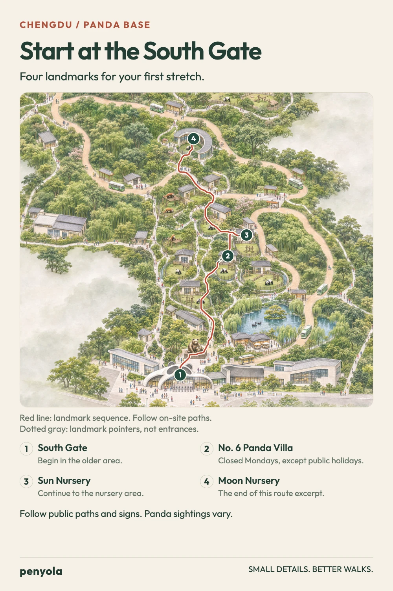

Chengdu · walking notes
At the Panda Base? Start with the right gate.
Last checked:
The South Gate and West Gate lead into different parts of Chengdu Panda Base. This short guide starts at the South Gate and focuses on the older Panda Villa Area. If your arrival point is the West Gate, use the base's official map to plan from there.

Four names to keep in mind
- South Gate. Find your position here before choosing your first stop.
- No. 6 Panda Villa. Use this as an early landmark in the villa area. Check the closure note below before making it a must-see.
- Sun Nursery. Continue your visit toward the nursery area, using the public paths and current signs.
- Moon Nursery. This is the last landmark in our short excerpt. The illustrated line is an orientation aid, not a measured navigation track.
No. 6 Panda Villa is closed on Mondays, except Chinese statutory public holidays. Do not follow this excerpt through a closed area. Ask staff for the open public path before continuing. The base may also close areas temporarily for animal care, maintenance or weather.
Plan around the animals
A nursery name is not a promise that cubs will be on view. Animals and visitor access can change. Stay on public paths and respect barriers. The official visitor rules ask guests to keep quiet, turn off flash and never feed the animals.
Check the official map before setting off
The base's map page links to its official mini program for tour routes. Use that and on-site signs for the day's access. Our illustration helps you recognize the sequence of landmarks; it does not identify every viewing entrance or temporary diversion.
Landmark layout also cross-checked against the archived February 2026 official panoramic map. AI-assisted illustration.
More planning guides
Sources
Checked on these official pages on 21 November 2026: